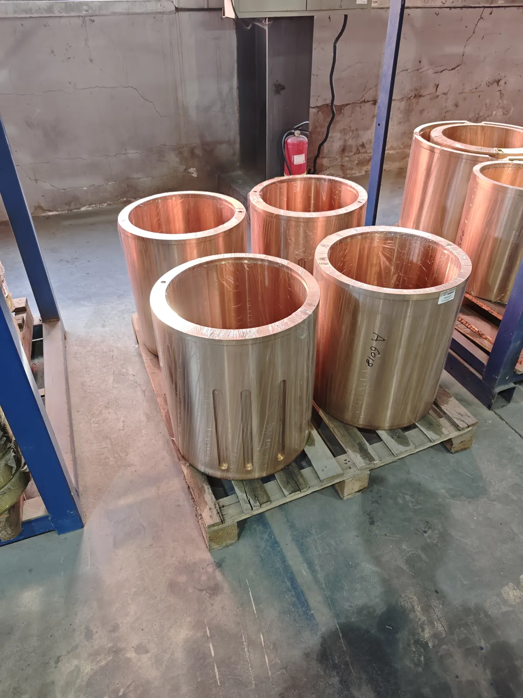
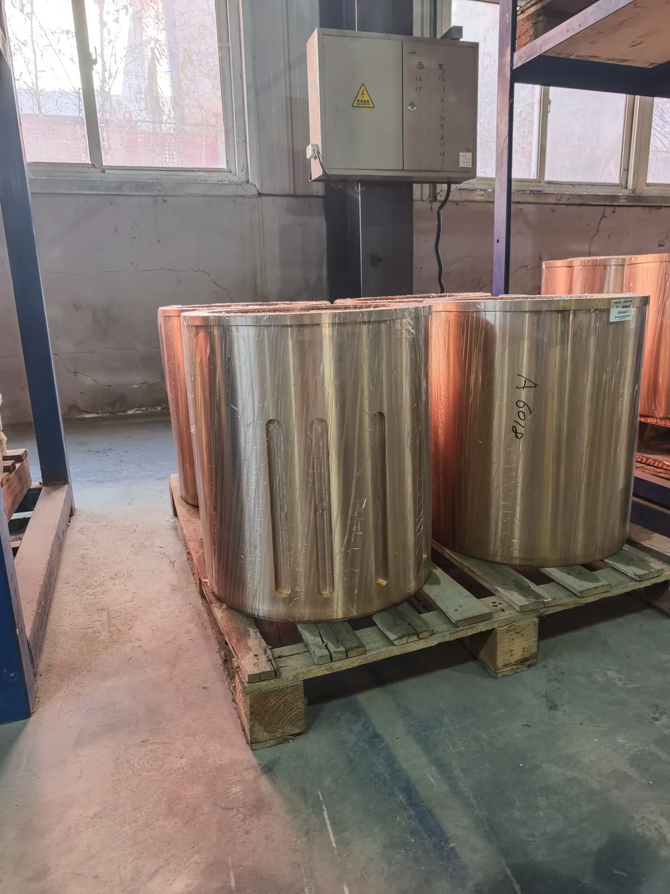
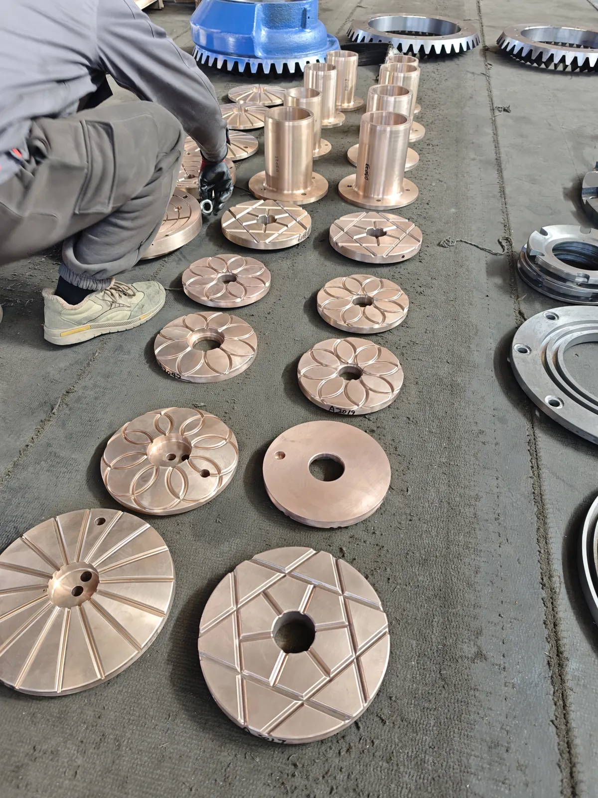
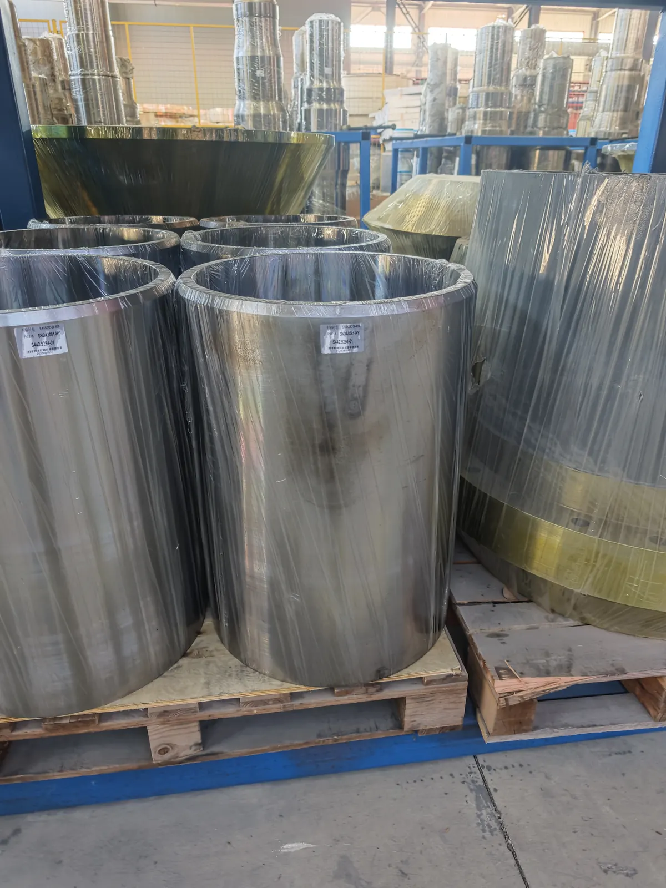

Support and lubrication
Bronze bushings guide, support and protect cone crusher moving assemblies. Fit and lubrication quality strongly influence service life.
Bronze / Copper
Bronze components for eccentric, shaft, frame and support positions, with close attention to tolerances, oil grooves and lubrication reliability.

Bronze bushings guide, support and protect cone crusher moving assemblies. Fit and lubrication quality strongly influence service life.
Inner diameter, outer diameter, roundness, concentricity and oil-groove geometry should be confirmed before production.
Compatible cone crusher positions include eccentric bushings, frame bushings, countershaft bushings, main shaft sleeves and socket liners.
XCT checks part position, material and tolerance details before quoting to reduce installation risk.



Quality checks focus on bronze alloy, bore and OD dimensions, roundness, concentricity, oil grooves, machined surfaces and visual defects.
MOQ can start from 1 pc. Lead time depends on alloy, machining complexity and drawing status. Bushings are protected against impact, moisture and rust during export packing.
Send model, bushing position, reference number, drawing or photos, dimensions, tolerance notes, alloy request, quantity, destination and required date.
Brand names are used only to identify compatible crusher applications. XCT Mining is an independent aftermarket supplier.
Buyer FAQ
Common causes include poor lubrication, oil contamination, incorrect clearance, misalignment, overload and unsuitable surface finish.
Photos help start the review, but drawings or measured ID, OD, height, groove and tolerance data are usually needed before production.